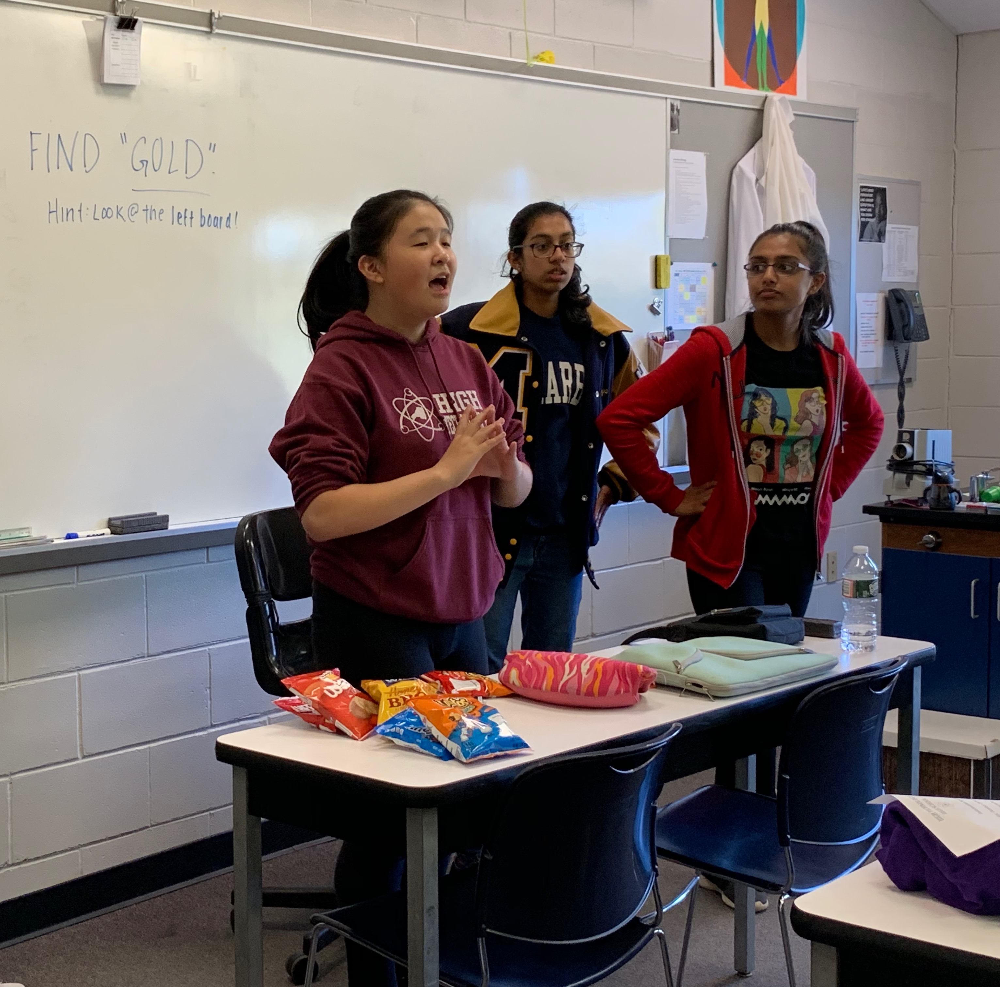
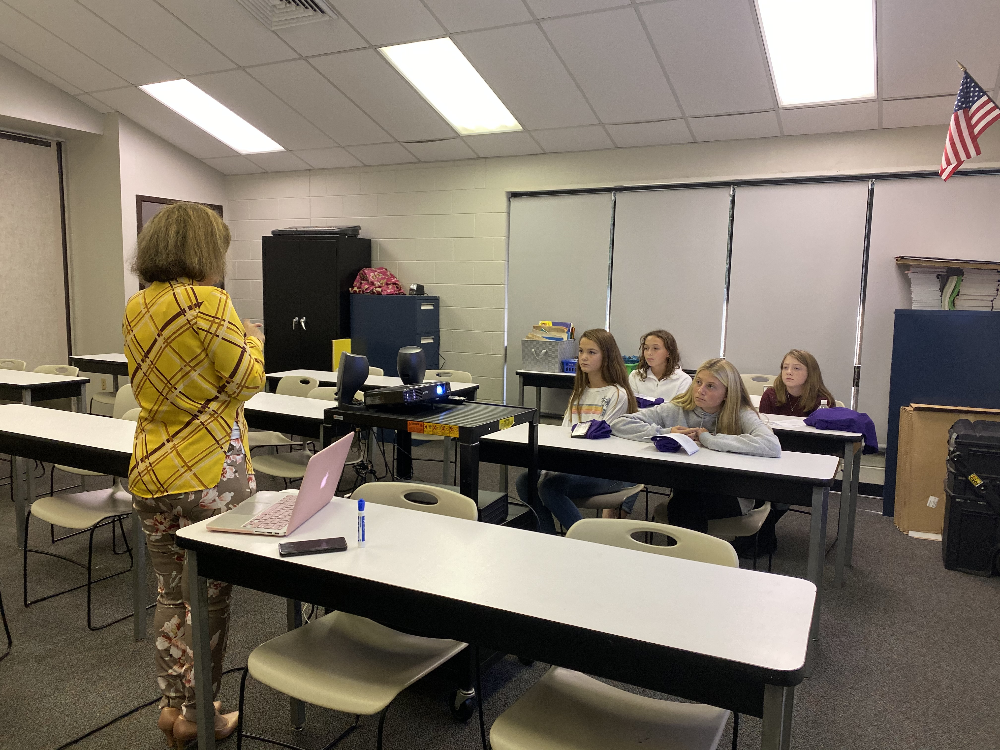
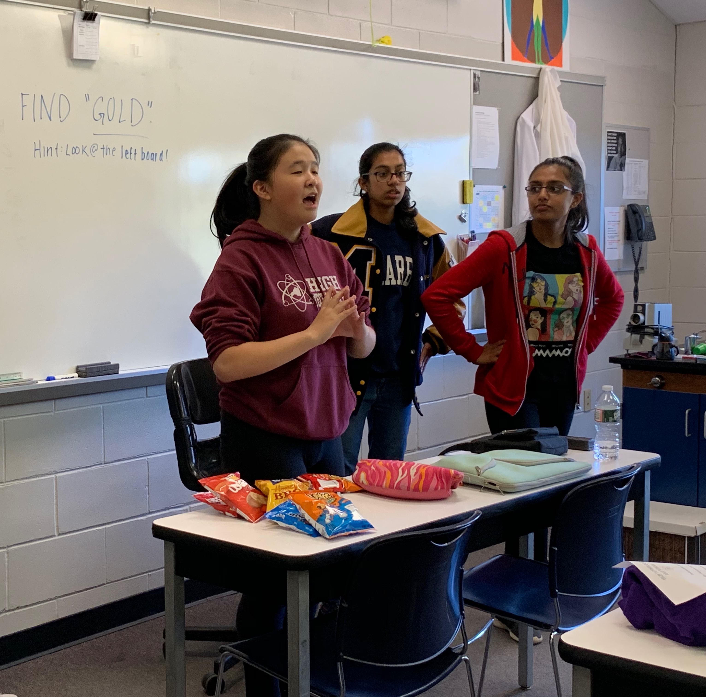
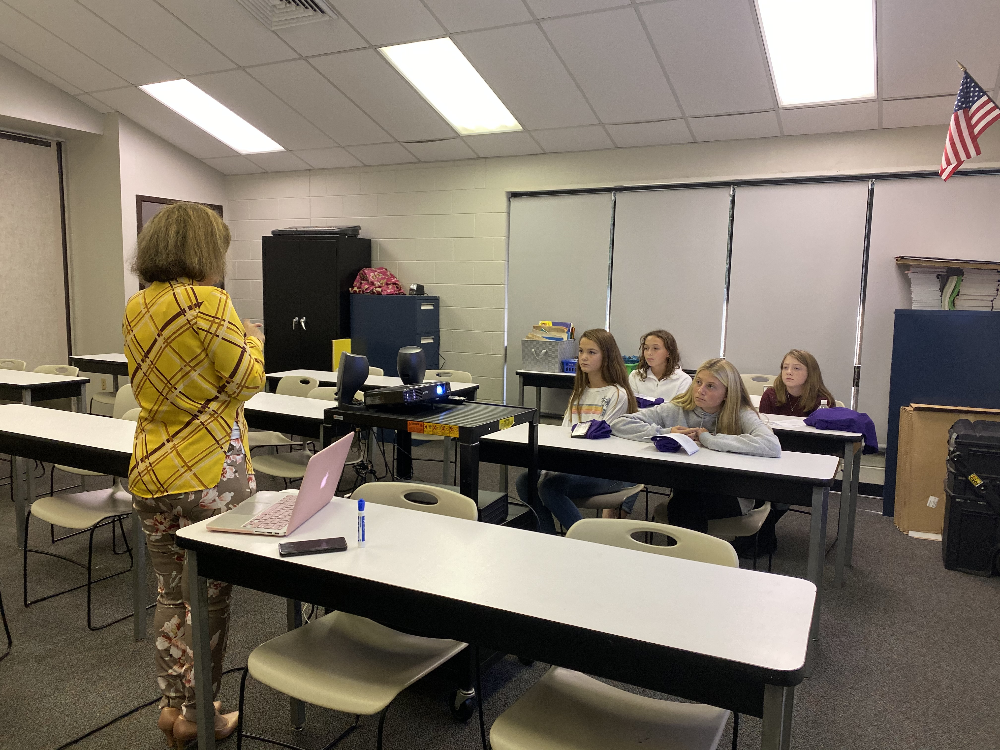

Snacks for Scientists is an annual event designed to encourage 5th, 6th, 7th, and 8th grade girls to explore STEM (Science, Technology, Engineering, and Math) related fields. Studies show that if girls are not interested in STEM by the 7th or 8th grade, they are very unlikely to pursue a career in STEM in their adult lives. The gender gap in STEM careers is widening and we want to help girls learn more about the many career paths available in STEM. We hope to introduce girls from all over Monmouth County to STEM now, so they can take part in those fields in the future.
Students who participate in Snacks With Scientists will get the opportunity to meet and talk to successful women who have a wide variety of experiences in the academic and professional world, while enjoying delicious snacks. To learn more about our presenters this year, please visit our Meet the Scientists page through the navigation bar. Volunteers from High Technology High School will also join in and facilitate conversations
This year, Snacks with Scientists will be back in person! The event will be hosted by High Technology's National Honors Society and Steminists Club on October 21st from 3:30 to 5:30 pm. All girls currently enrolled in 7th or 8th grade are invited to register and experience an afternoon filled with conversations, snacks, and all things STEM.
 




Check out our Flyer for more information!
October 21st, 2022
3:30 - 5:30 p.m.
High Technology High School
765 Newman Springs Road
Lincroft, New Jersey